[Javascript] Node.jsをインストールしてReactを使う方法
こんにちは。明月です。
この投稿はNode.jsをインストールしてReactを使う方法に関する説明です。
私がアルバイトや勉強した時期を除いて、学校を卒業してプログラムを開発した経験が約14年から15年間になります。
始めから「ウェブ開発しよう」と思ってからやったことではなくCS(Client Server)プログラムから組み込み開発などの様々な分野でさまようした後、結局に需要が多いのウェブ開発者になりました。
ウェブというのは初期にはそんなに難しいと思わなかったですが、どの分野でも同じですが、知る深さが深くなるほど知るべきな規約も多いし、毎日に出るライブラリとフレームワークなどを学ばなければならないことが凄く多いですね。実はそれがウェブ開発の面白さかも知れません。
人により開発の価値観が違いますが、私の場合は新しいライブラリとフレームワークを早く学んで使うスタイルではありません。理由は様々がありますが、安定性の理由ですね。
Javaの場合は始めJava servlet環境から始まってstruts(ストラッツ)、Spring web framework、Spring bootまで使いました。
以前にはJava servletをかなり長い時間で使いましたが、フレームワークの必要性を感じて、struts(ストラッツ)を使った時がありました。始めにはservletより早い開発と特別な概念で良いと思いましたが、strutsが思ったより問題が多かったんです。structの問題なら代表的なことがセキュリティイッシューですね。
今でも理解できないことがservletにもできるInjection問題がstrutsにはなぜできないかな。。それでプロジェクトと関係ない回避コードもたくさん作るし、どの場合はフレームワークのライブラリのほぼを継承して再定義した時もありましたね。
その経験があるので、フレームワークとライブラリを使いことが厳しくなりました。フレームワークというのは使ったら途中で変わることがずいぶん難しいでしょう。つまり、プロジェクトでstrutsを使いながらspringが良いと思ってフレームワークを簡単に変更できることがありません。普通は初めからやり直しするケースが多いです。
なので、Spring web frameworkがトレンドになる時にも相当にJava servletを使って私のフレームワーク(?)を構築して使いました。
経歴の半ばまで多いチーム員とプロジェクトをやることより3~4人でやることが多いので、その方法が問題になるか大変な時が無かったんです。ただ、必要なら私が説明するし作ったら良いからです。
チーム員が多くなるし、様々なシステムと共に使う場合(Microservices Architecture)が出来てから大勢の人達と共有が可能なフレームワークを使う必要性を感じてSpring Web frameworkからSpring bootまで使うことになりました。
今、思えばSpringは凄く良い概念で良いframeworkだと思います、思いより単純な概念でセキュリティイッシューの影響も少ないです。初めからSpringを使ったらどうでしょうと思う時もありました。
それと似ている状況でJavascriptもずいぶん長い時間でバニラバージョンを使うしJqueryのSizzleエンジンが楽なのでJqueryも相当の時間で使いました。
それでES6(2015)バージョンでSizzleの概念がJavascriptのバニラバージョンでも含まれてJqueryを使う理由も無くなりましたね。でも、まだ多いライブラリがJqueryを依存しているし、作らさせたのでずっと使いましたが、最近多いライブラリがJqueryの除きを始まりました。
そして最近の多いフロントエンド開発者がJqueryを悪い評価する方も多くなりました。代表的にJqueryが凄く遅いということですが、私はJqueryが遅いと感じたことがないですが。。。
決定的に私はBootscript5からJqueryを除くという話でショックを受け取って、これからはJqueryを外して新しいJavascriptフレームワークを使わなければならないと思いました。
その間に最近フロントエンドの開発スタイルはSPA(Single page application)だし、それを効果的に支援するフレームワークを探す中でReactを見つけて使いました。Reactの感じはまだかなり良いと思うフレームワークです。
実は以前にAngularを使った時がありますが、Angularは概念は難しかったんです。もちろん、頑張って学んだら使えると思いますが、既存のJavascript(Typescript)のスタイルで作成してもNGだし、Angularだけの規約を合わせて作成しなければならない様々な難しいことがありました。
Angularを好きで専門にする方も多いので悪く評価がしません。ただ、私とは合わなかったんです。もしかして分からないですね。将来にはAngularを使うかも。。
それで今は一応、Reactを選択して始まります。
Reactを始まる前に知るべきなことがNode.jsとTypescriptです。
実はJavasciprtというのはウェブ専用スクリプト言語です。それで私がスクリプト言語を学ぶ時にローカルはファイソン、ウェブサーバーはPHP、ウェブクライアントはジャバスクリプトで区分して使いました。なのでジャバスクリプトを誰でもローカルで使うと思わなかったんですね。
それをグーグルはローカルで使いたかったかも知りません。それをサーバー言語に使えるようなライブラリがNode.jsです。もっと複雑な履歴がありますが、それは重要ではないので、ただローカルで使うジャバスクリプトだと思えば良いでしょう。
Reactはウェブブラウザで動くフレームワークですが、なぜNode.jsが必要かな?というなぜができます。
今は業務がフロントエンド、サーバーサイドということに完全に区別になっています。私がウェブ開発した時代にはフロントエンド開発者やウェブデザイナーがCSSやHtml、Javascriptで作ってもサーバーサイド開発者がそれをサーバー環境に合わせてパーシング作業をしなければならなかったんです。
またはフロントエンド開発者が自分の혹은PCに同じサーバープログラムをインストールしてその上で作業することか。。完璧な分離が出来ませんでした。
今はNode.jsでフロントエンド開発者のためのウェブサーバーを構築して、proxy設定でサーバーサイドを連結して使います。そして最終的に配布する時だけNode.jsでビルドしたファイルをサーバーサイドの開発コードに入れて最終コンパイルにするとプロジェクトが完成になるでしょう。
もちろん、プールスタックならサーバーサイドやフロントエンドを同時に開発することができるので、Node.jsが要らないかも知りませんが、ただIDEで開発することよりNode.jsを利用するとフロントエンドは凄く楽でしょう。
Node.jsをインストールする方法はただ、インストールファイルをダウンロードして実行すれば良いです。
リンク - https://nodejs.org/ja/
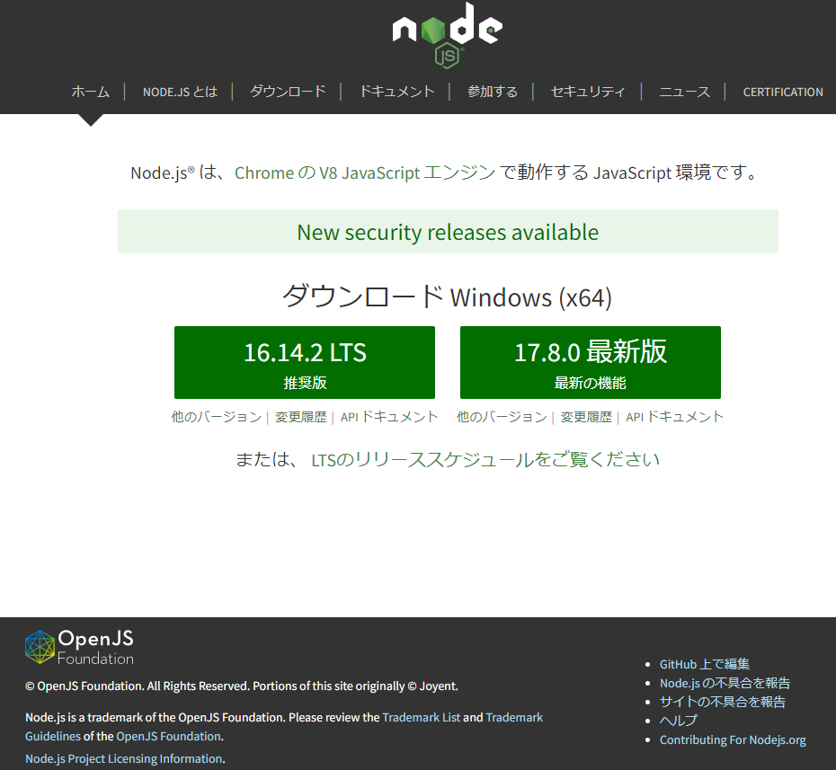
最新バージョンが良いですが、私は安定化になったLTSバージョンを選択するので、LTSバージョンをインストールしましょう。
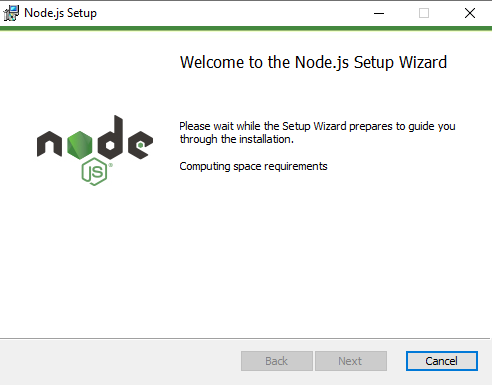
始めはローディング時間がかかりますが、１分ごろ待つならインストール画面が出ます。
そして適当な場所でインストールしたら良いでしょう。
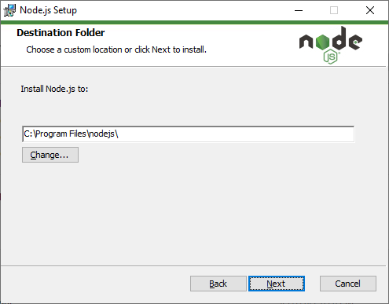
そしてインストールが完了しました。
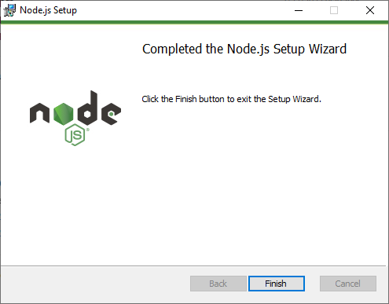
これから適当なところでJavascriptを作成してウェブサーバーを立ち上げましょう。
const http = require('http');
http.createServer((req, res) => {
res.statusCode = 200;
res.setHeader('Content-Type', 'text/plain');
res.end('Hello World');
}).listen(3000);
コンソールにnode index.jsのコマンドでサーバーを起動しましょう。
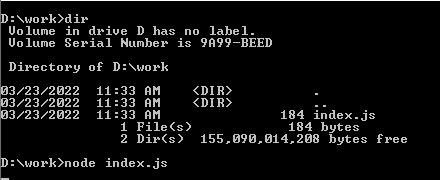
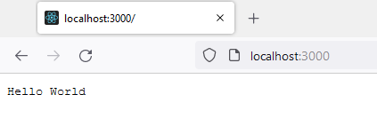
ブラウザにhello worldが見えますね。ここまでプロジェクトの開発準備は終わりました。
参考にフロントエンドの場合は開発IDEをVisual studio codeで使います。
これでReactのフレームワークを使いましょう。
フロントエンドを開発すると思っても上みたいにサーバーソースをすべて作成する必要がありません。フロントエンドのプロジェクトは基本的に作成されている形があります。
Reactの場合も同じです。コンソールに下記のコマンドで作成しましょう。
npx create-react-app my-app --template typescript
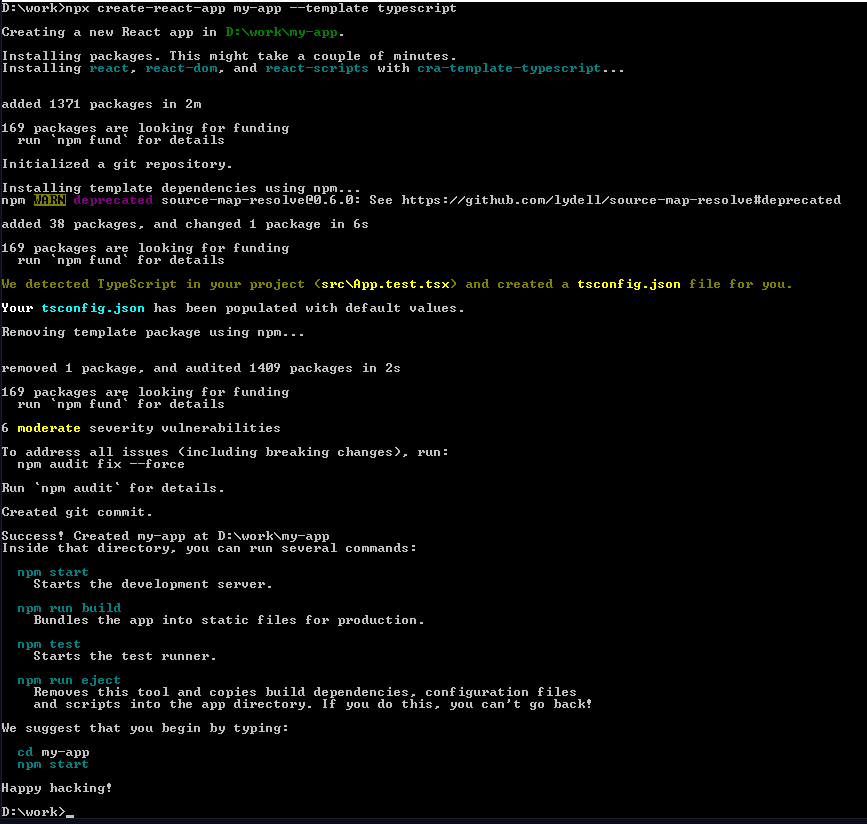
最後にHappy hacking!が出たらインストールが完了したことです。私も始めHacking!という言葉でビックリしましたが、楽しいプログラミングという意味だと言います。詳細のは私もよく分かりません。ただ、問題ありません。
上でmy-appのオプションを設定したので、my-appで生成されました。
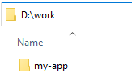
my-appからサーバーを起動しましょう。
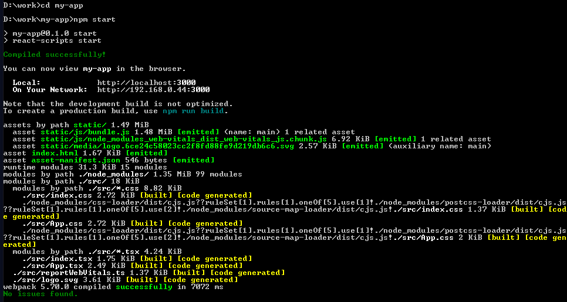
コンソールに上みたいなログが出たら実行されました。その後、ブラウザにhttp://localhost:3000で接続します。
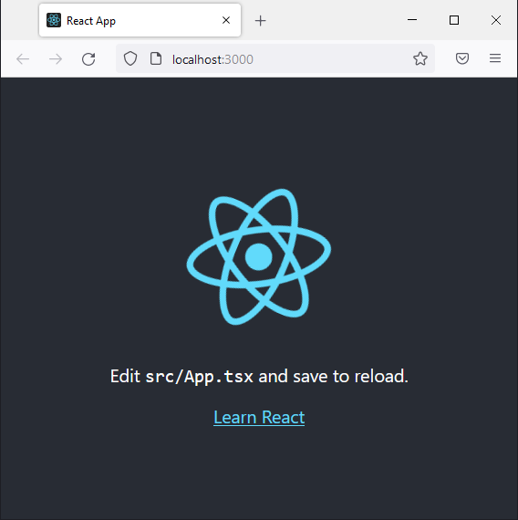
上みたいな画面が表示されたら設定が完了されたことです。
これからディレクトリを確認すると下記の構造になっています。
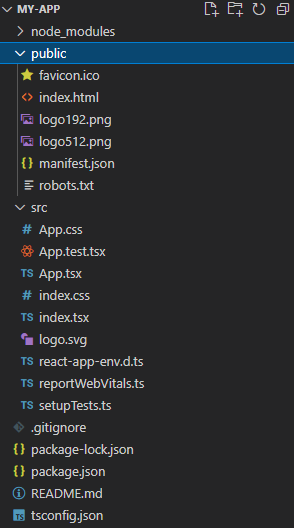
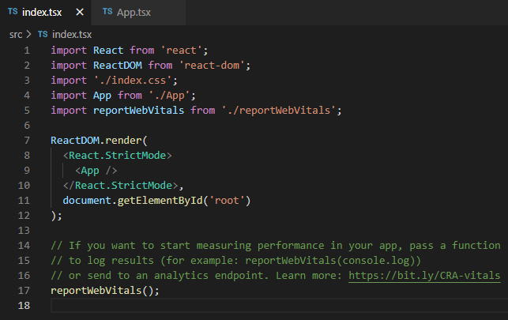
確かにJavascriptでウェブフロントエンドを開発すると説明しましたが、Javascript(.js)ファイルはないでしょう。
この投稿ですべてを説明するのは難しくて、Typescriptに関して簡単に説明します。
Javascriptはスクリプト言語なので、コードにエラーがあるとその部分が実行する前には分かりません。
function func() {
function test(val) {
console.log(val.data);
}
test();
}
上のソースはfunc関数を呼び出す前にはエラーが発生しません。つまり、人がミスで間違って作成しても実行は問題なくできるということです。
そのことでソースがサービスにデプロイされて、どの時点でユーザが実行してエラーが発生したらそれがバグです。
それで我々はJavascriptも機械的な検査で文法で問題があるかを事前に知る必要があります。
그것이 Typescript입니다.
TypescriptはJavascriptと文法が違います。多い差異があることではなく、変数にデータタイプを明示することか上みたいにパラメータが必要な関数でパラメータ無しで呼び出すエラーを探す役割をします。
つまり、Typescriptで少し厳しい文法で作成して多いバグをなくしてJavascriptファイルをOutputする機能になります。
私は上でReactの基本フレームワークをダウンロードする時、--template typescriptと言うオプションを付けました。それでtypescript形式で生成されました。
もしかしてtypescriptタイプが要らないなら--template typescriptを省略するとjsファイルでReactが生成されます。
上のプロジェクトをBuildしましょう。
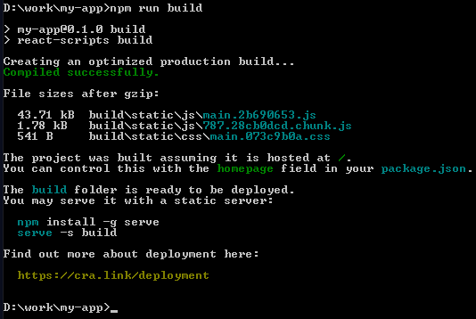
そうすると最終結果はjsファイルで作成されるでしょう。
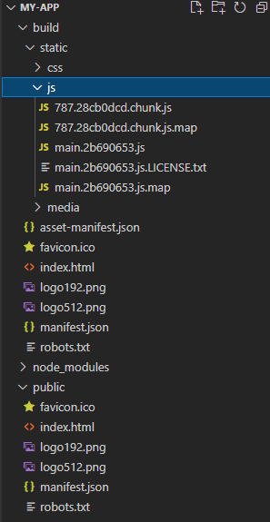
そのファイルをサーバーサイドにコピーするとReactフレームワークを使えます。
ここでは私がNode.jsをインストールしてReactフレームワークをダウンロードして実行する方法まで説明しました。
次の投稿ではTypescriptとReactに関してもっと詳細に説明します。
ここまでNode.jsをインストールしてReactを使う方法に関する説明でした。
ご不明なところや間違いところがあればコメントしてください。
- [Javascript] Node.jsをインストールしてReactを使う方法2022/03/23 18:01:34
- [CSS] ブラウザから開発する方法 (developer mode)2019/12/25 07:54:31
- [CSS] 色スタイル、グラデーション2019/12/24 07:37:22
- [CSS] アニメーション (animation)2019/12/20 20:51:38
- [CSS] トランスフォーム (transform)2019/12/19 13:00:26
- [CSS] トランジション(transition)2019/12/18 20:33:57
- [CSS] Columnスタイル2019/12/17 19:52:56
- [CSS] 整列スタイル (float)2019/12/17 00:08:54
- [Java] 64.Spring bootとReactを連結する方法(Buildする方法)2022/03/25 21:02:18
- [Javascript] Node.jsをインストールしてReactを使う方法2022/03/23 18:01:34
- [Java] 63. Spring bootでcronスケジューラとComponentアノテーション2022/03/16 18:57:30
- [Java] 62. Spring bootでWeb-Filterを設定する方法(Spring Security)2022/03/15 22:16:37
- [Java] JWT(Json Web Token)を発行、確認する方法2022/03/14 19:12:58
- [Java] 61. Spring bootでRedisデータベースを利用してセッションクラスタリング設定する方法2022/03/01 18:20:52
- [Java] 60. Spring bootでApacheの連結とロードバランシングを設定する方法2022/02/28 18:45:48
- [Java] 59. Spring bootのJPAでEntityManagerを使い方2022/02/25 18:27:48
- [Java] 58. EclipseでSpring bootのJPAを設定する方法2022/02/23 18:11:10
- [Java] 57. EclipseでSpring bootを設定する方法2022/02/22 19:04:49
- [Python] Redisデータベースに接続して使い方2022/02/21 18:23:49
- [Java] Redisデータベースを接続して使い方(Jedisライブラリ)2022/02/16 18:13:17
- [C#] Redisのデータベースを接続して使い方2022/02/15 18:46:09
- [CentOS] Redisデータベースをインストールする方法とコマンドを使い方2022/02/14 18:33:07
- [Design pattern] 3-6. ステートパターン(State pattern)2021/11/17 20:04:47